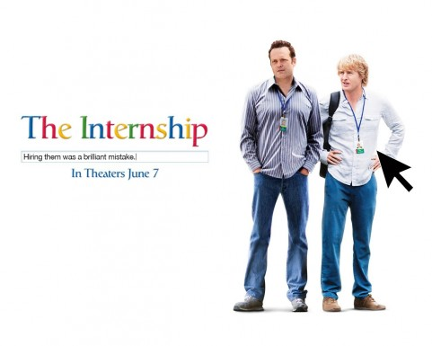
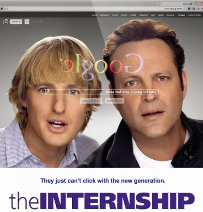

Aprendices fuera de línea (The Internship)
 ‘The Internship’ o ‘Aprendices fuera de línea’ es una comedia estructurada en la típica pelea entre nerds y matones. Sin embargo, en esta ocasión, los papeles son invertidos ya que en Google los nerds son los duros del sitio. La película dirigida por Shawn Levy intenta alimentar la película con elementos geek para acompañar el contexto, pero se queda en los estereotipos básicos.
Billy (Vince Vaughn) y Nick (Owen Wilson) son vendedores de relojes de unos 40 y tantos años, pero su empresa quiebra ante presiones de la competencia. En su pérdida, Nick cree que lo mejor es seguir siendo empleado -con la seguridad que eso implica-, mientras que la vida de Bill parece derrumbarse al ver que sus sueños cada día son más imposibles.
Bill googlea ofertas laborales y se encuentra con las pasantías de verano de Google. Se inscribe junto a Nick y son aceptados por tener un perfil ‘diferente’ al típico empleado del gigante de internet. De aquí en adelante la historia se vuelve como la trama de Monsters University, donde un grupo de pasantes con perfiles disonantes se enfrentan a un equipo elite en una serie de pruebas para obtener el empleo. Esta serie de pruebas durante la pasantía llevan a que Bill y Nick aprendan sobre la tecnología, y al grupo de nerds asociales a trabajar en equipo.
La película es una comedia muy buena, con algún personaje invitado (lo van a reconocer muy rápido) maneja un ritmo muy constante, ya que nunca sientes que la película decaiga, el humor no se siente nada forzado, además encontramos muchas referencias a otras películas, en lo particular una donde hablaran de mutantes (ya entenderán), puedo decirles que la película es muy digerible para poder ir con la novia, los amigos y la familia, para tener un rato muy agradable.
Por otro lado la historia muestra el choque que hay entre generaciones y como se perciben una con respecto a la otra. Y no digo que sea de esas películas que buscan dejarte una moraleja o algo por el estilo, pero tocan temas importantes como el trabajo en equipo, amistad, el tener confianza en uno mismo y mostrar perseverancia, la cual me parece el tema principal de la película.
Con respecto a las actuaciones, son muy cumplidoras, no se llevaran un oscar, pero para el papel que manejan están totalmente bien y la música es un agregado que resalta los momentos importantes de la película, no esperen música de orquesta o algo por el estilo, si no una recopilación adecuada de varios tracks.
Uno de los elementos más notorio es la propuesta de los complejos personajes. Y no son complejos por tener un trasfondo muy fuerte o un desarrollo impresionante de carácter. Por el contrario son muy simples, pero son lo suficientemente bobos para agradarnos. A veces se sienten demasiado estereotipados para que el público se sienta identificado.
Primero están Nick y Bill (los protagonistas), quienes son amigos de toda la vida, y lo único que saben es vender cosas. No están actualizados con la tecnología, y saben apenas lo básico de cómo utilizar un computador. En momentos parecía como un stand up donde se burlan de cuando uno le explica al abuelo como usar un celular o un computador.
Pero esta actitud de ignorancia es lo que ayuda a que la película avance, porque uno ve que empiezan por lo básico hasta aprender las cosas más importantes. Además le recuerda a uno al papá aprendiendo a ‘abrir eso de la internet’.
Luego está el resto del grupo de Bill y Nick. En el grupo vemos una diversidad de personajes bien estereotipados. Lyle es un empleado en Google que tiene 23 años y es muy buen programador, pero no tiene experiencia manejando un grupo de personas. Yo-Yo es un asiático bien nerd cuya madre lo obliga a ser el mejor en todo, por lo que tiene tics de autoflagelación cuando falla en algo. Neha es una obsesiva por los doushin, los fan-fics, el hentai y el cosplay sexy; pero nunca ha tenido alguna clase de experiencia sexual. Y por último está Stuart, un joven apático que vive pegado al celular y que no levanta la cabeza para socializar con nadie. 
Ahora, muchos tal vez digan que esta es la película perfecta para aquellos que temen aprender todo lo que la tecnología e internet brindan. Aprendices Fuera de línea puede aplicar, en este caso, como una invitación a intentarlo, un mensaje de “sí se puede”, una invitación a actualizar los conocimientos (sin dejar a un lado lo ya aprendido). Y para quienes trabajan en ventas, es un buen ejercicio ver a este par en acción, ver como mezclan sus habilidades sociales, con su conocimiento. Es muy interesante.
Vince Vaughn (quien también participa en el guión) y Owen Wilson, vuelven a trabajar juntos y cuyos personajes parecen que se mantuvieran de película en película, además dan la sensación que en la vida real deben ser así de amigos. La forma en que interactúan es perfecta para la película y los fanáticos de los temas de tecnología van a encontrar cientos de referencias en los diálogos. Además estos vendedores se automotivan con el personaje de la película Flashdance y una cantidad de cosas de los 80’s que se combinan con las cosas de esta época.